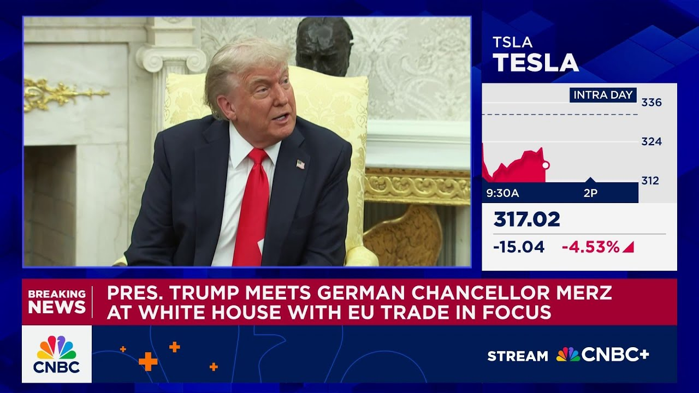

【马斯克：没有我，特朗普当不了总统】
Summary: Elon Musk criticizes Trump on social media, claiming Trump would have lost the election without his support, sparking a public feud during a bilateral meeting with Germany's chancellor.
摘要： 埃隆·马斯克在社交媒体上批评特朗普，声称没有他的支持特朗普会输掉选举，并在与德国总理的双边会议期间引发公开争执。

⏱️ Estimated Reading Time: 8 min
📚 高考3500生词 📚 雅思生词 📚 托福生词 📚 GRE生词 📚 UP主推荐生词
Back to Aean Javvers.
回到安·贾弗斯。
We do have some more news uh at the White House.
我们确实有更多来自白宫的消息。
Aean.
安。
Yeah, Scott.
是的，斯科特。
This is blistering criticism now from Elon Musk on social media just responding to the president's event in the Oval Office a short time ago.
这是埃隆·马斯克在社交媒体上的猛烈批评，刚刚回应了总统不久前在椭圆形办公室的活动。
Elon Musk posting on X his social media platform.
埃隆·马斯克在他的社交媒体平台X上发帖。
Without me, Trump would have lost the election.
没有我，特朗普会输掉选举。
Dems would control the House and the Republicans would be 5149 in the Senate.
民主党将控制众议院，共和党在参议院将以51比49占优。
He goes on to post two words, such ingratitude.
他接着发了两个字：忘恩负义。
Now that follows on President Trump appearing in the Oval Office alongside the chancellor of Germany.
此前，特朗普总统与德国总理一同出现在椭圆形办公室。
Uh the president saying that he would have won Pennsylvania without Elon Musk.
总统表示，没有埃隆·马斯克他也能赢得宾夕法尼亚州。
He was doing just fine.
他本来就没问题。
Uh and the president by his own terms very measured in his criticism of Elon Musk.
总统在批评埃隆·马斯克时措辞非常谨慎。
But he did say that Musk uh was for his big spending bill until he came out against it after leaving government.
但他确实提到，马斯克曾支持他的大规模支出法案，直到离开政府后才反对。
And that Musk had been totally briefed on that spending bill before he left government.
而且马斯克在离开政府前已完全了解该支出法案。
Musk taken to social media during that press availability to say that was false.
马斯克在新闻发布会期间通过社交媒体表示这是假的。
He had not seen the bill until after the fact and it was done in the dark of night.
他在事后才看到该法案，而且法案是在深夜秘密通过的。
So an erupting political controversy and and sort of uh political fisticuffs I guess is the way to describe this between Elon Musk and Donald Trump.
因此，这是一场爆发的政治争议，或许可以说是埃隆·马斯克和唐纳德·特朗普之间的政治拳击赛。
Two figures who are just enormously powerful figures on the world stage who were joined at the hip politically from the summer until last week.
这两位在世界舞台上极具影响力的人物，从夏天到上周还在政治上紧密合作。
And now a major fracture here between the two.
而现在两人之间出现了重大裂痕。
Uh the president was, as I say, fairly measured in his criticism of Musk by his own terms in the Oval Office.
正如我所说，总统在椭圆形办公室对马斯克的批评相当克制。
We'll see if that holds for the rest of the afternoon.
我们看看下午余下时间是否还会如此。
Scott, back over to you.
斯科特，交还给你。
This really is an incredible developing story.
这确实是一个令人难以置信的进展中的故事。
I I I'm wondering if as a reporter who's covered this from the get-go, who's been in the Oval many times when Musk and the president were there addressing all of you, just what you make of this such high-profile falling out.
我想知道，作为一名从一开始就报道此事的记者，曾多次在马斯克和总统在场时进入椭圆形办公室，你对如此高调的决裂有何看法。
Some, I'm sure, would have said this was predictable at some point that these two powerful personalities were not going to be able to last forever as uh buddies.
我相信有些人会说，这两位强势人物不可能永远做朋友，这一点迟早会预料到。
I'm just curious through your own lens, Aean, what what you make of how this has turned into such a public fracture on what frankly is a very big stage, a a bilateral meeting between the president and the German chancellor.
我只是好奇，安，从你的角度来看，你对这场在总统与德国总理的双边会议这样重要场合公开爆发的裂痕有何看法。
I mean, I think the way that Elon Musk is doing this speaks to his knowledge of the Oval Office and the knowledge of the pacing and timing of these events, having been there, you know, sort of live tweeting during it, responding to the president in real time and saying that what the president is saying is false, saying the president is expressing ingratitude for the millions of dollars that Elon spent on his campaign.
我认为，埃隆·马斯克的做法表明他了解椭圆形办公室以及这些活动的节奏和时机，他在现场实时发推回应总统，称总统的说法是假的，并表示总统对他为竞选花费的数百万元表现出忘恩负义。
I mean, that is particularly prickly and particularly sticking the knife in politically here.
这尤其尖锐，政治上尤其捅刀子。
Um, but I think a lot of people would have said that it was remarkable that this political partnership made it as many months as it as it did.
但我想很多人会说，这段政治合作关系能持续这么多月已经很了不起。
I mean, we're here in June.
现在是六月。
A lot of people were predicting this back in November because of these two titanic egos, two people with enormous success in their own chosen fields, two people who dominate the world media in real ways uh on a day-to-day basis.
早在去年11月就有很多人预测到这一点，因为这两个人都有巨大的自我，各自在领域内取得巨大成功，每天都在实际主导世界媒体。
uh that just the idea that those two volatile forces couldn't exist in the same small space for very long and yet they were able to have you know uh regular overnights in the Oval Office.
这两个不稳定的力量不可能长期共存于同一小空间，但他们却能在椭圆形办公室定期过夜。
Musk spent the night in the Lincoln bedroom several times.
马斯克多次在林肯卧室过夜。
He said the president would invite him over and say be sure to get the ice cream from the kitchen.
他说总统会邀请他过去，并说一定要从厨房拿冰淇淋。
It's great here.
这里的很棒。
Uh you know that kind of thing lasted a lot longer than people thought it would.
你知道，这种情况持续的时间比人们预期的要长得多。
And now this split and the split importantly over funding.
而现在这种分裂，重要的是在资金问题上的分裂。
You know Elon made his political crusade about deficits and federal spending.
你知道，埃隆将他的政治斗争集中在赤字和联邦支出上。
He's breaking with the president on that.
他因此与总统决裂。
And then breaking with the president, the president says after the president uh and his bill took away Elon Musk's EV uh subsidies that benefit Tesla, Musk has said in the past, go ahead, take those EV subsidies away.
然后与总统决裂，总统表示在总统和他的法案取消了对特斯拉有利的电动汽车补贴后，马斯克过去曾说，尽管取消那些电动汽车补贴。
That's fine.
没关系。
Tesla can compete better than the other electric vehicle companies without them.
没有补贴，特斯拉也能比其他电动汽车公司更具竞争力。
So Tesla will win relatively against the others.
因此特斯拉相对其他公司会胜出。
So, you know, where does all that leave us?
那么，这一切让我们处于什么境地？
I mean, I think Elon Musk has a longer political timeline than Donald Trump does.
我认为埃隆·马斯克的政治时间线比唐纳德·特朗普更长。
Trump is leaving office.
特朗普即将离任。
There will be a 2028 election.
2028年会有选举。
Uh and the the country will move on in in 3 years.
三年后国家会继续前进。
He's sort of weirdly already a lame duck in that sense.
从某种意义上说，他已经是个跛脚鸭了。
Elon Musk has generational time here and financial, you know, nearly infinite resources.
埃隆·马斯克拥有代际时间和近乎无限的财力资源。
If he wants to be a big player in American politics, he will continue to be a big player in American politics for decades to come.
如果他想成为美国政治的重要人物，未来几十年他仍将是重要人物。
Trump doesn't have that kind of running room.
特朗普没有那样的空间。
And I think uh you saw some of the resentment there from Trump uh in the Oval Office as he watched this.
我想你在椭圆形办公室看到特朗普对此的一些不满。
A man of a very different generation, very different temperament, very different interests.
一个完全不同世代、性格和兴趣的人。
Uh and yet they were able to make it work as a partnership for at least six months.
然而他们还是作为合作伙伴维持了至少六个月。